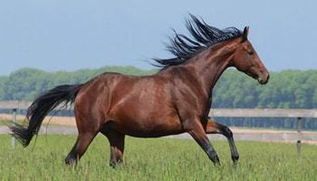
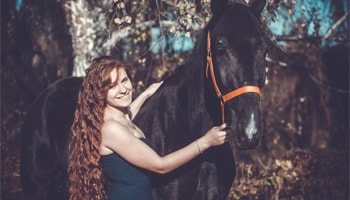

Українська верхова(порода), український верхови́й кінь — відносно нова порода коней, виведена в Україні після Другої світової війни для потреб кінного спорту. Порода була затверджена у 1990 році, а до цього називалася українська породна група. Створення коня верхово-упряжного типу в Україні розпочалося зразу ж після закінчення Другої світової війни на Українському кінному заводі, куди поступили трофейні коні. У 1953 розпочато роботи по виведенню верхової породи, що було пов'язано з розвитком в Україні кінного спорту та участю вітчизняних спортсменів в Олімпійських іграх. Для виведення української верхової було використано коней, більш ніж 11 порід.
Основними породами були: чистокровна верхова, тракененська, угорська, російська верхова, менше використовувалися коні ганноверської, арабської ї ахалтекинської порід.
У 1945 р. в Україні було розпочато роботу по виведенню нової вітчизняної породи верхових коней. Для її створення використовували місцевих верхових коней, збережене поголів'я Новоспасівського та інших кінних заводів Луганської області, жеребців та кобил західноєвропейських напівкровних порід (тракененська, ганноверська, угорські), а також жеребців орлово-ростопчинської та чистокровної верхової порід. Спочатку роботу проводили в Українському кінному заводі № 173 (Дніпропетровська область), а згодом у Провальському, Скадов-ському та Олександрійському кінних заводах. Після ліквідації перших трьох кінних заводів до роботи підключились Дніпропетровський, Деркульський, Ягільницький, а з 1975 р. і Лозівський кінний завод. Методичне керівництво здійснювали ВИДІ конярства та колишній Український трест кінних заводів. Великий внесок у створення породи зробили П. Я. Білан, В. П. Шимширт, В. Ю. Кологривов, О. А. Калантар, Д. А. Волков, І. Е. Готліб, В. О. Пересада та ін. За піввіковий період спеціалістами і працівниками кінних заводів, племконеферм методом складного відтворювального схрещування була виведена оригінальна порода верхових коней, яка поєднала в собі енергійний темперамент, силу і жвавість чистокровних, красу й елегантність форм орлово-ростопчинської, великий зріст, масивність, продуктивність рухів та спортивні якості західноєвропейських порід, міцну конституцію, високу плодючість та адаптивність місцевих порід.
Наказом від 16 жовтня 1990 р. № 168 Державна комісія Ради Міністрів СРСР по продовольству і закупівлях затвердила нову породу коней, присвоївши їй назву українська верхова. Нині роботу по вдосконаленню української верхової породи виконують сім кінних заводів, близько 20 племінних ферм, в яких нараховується майже 1700 коней. Характерними рисами екстер'єру цих коней є гармонійна будова тіла, пропорційна з прямим профілем голова, довга, високо поставлена шия, глибокі й широкі груди, пряма спина, довгий, добре обмускулений круп, міцні кінцівки. Як недоліки екстер'єру трапляються шаблюватість кінцівок, запале зап'ястя, звислий круп тошо. Переважають масті гніда з відтінками, руда, ворона та каракова, інші зустрічаються дуже рідко.
Середні проміри коней української верхової породи (см): жеребців — 165,4-165,0-192,2-20,7, кобил — 162,8-162,5-191,7-20,1. На конях української верхової породи (Маневрі, Бостоні, Ранку, Ізгибі, Бакені, Іхорі, Шквалі, Ігроці, Плоті, Барбарисі, Русі, Букеті, Іртиші, Туземці, Бахусі, Фібрині та ін.) спортсмени І. Кизимов, В. Місевич, В. Угрюмов, О. Клименко, В. Дуркот, П. Ткаченко, В. Погановський, Г. Мартиненко, В. Губанов неодноразово перемагали та були призерами міжнародних змагань, чемпіонатів Європи, СРСР та Олімпійських ігор. У породі є сім ліній, дванадцять родин. Найціннішими є лінії Хобота, Фактотума, Безпечного, Тугенота, родини Хохлатки, Інфри І, Билини, Маріци, Тіни тощо. Багато коней української верхової породи було експортовано в країни Західної Європи, і нині вони продовжують користуватись попитом.Селекційна робота з українською верховою породою спрямована на консолідацію бажаного типу, поліпшення спортивних якостей і генеалогічної структури. Основним методом племінної роботи є чистопородне розведення з обмеженим застосуванням коригуючого схрещування з жеребцями вихідних порід.
© Lviv Politechnik University - Tetiana Prybyla Lviv 2017